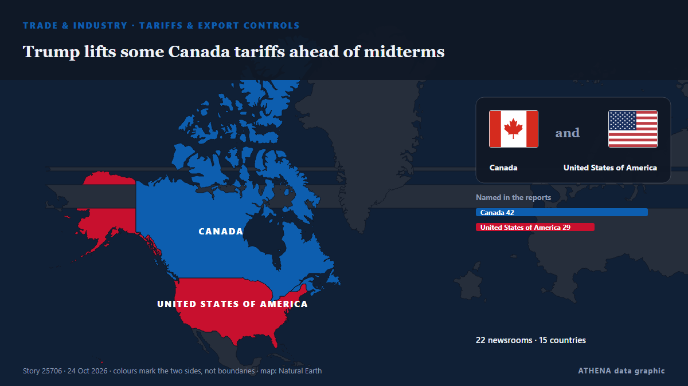

Trump lifts some Canada tariffs ahead of midterms

President Donald Trump's administration lifted some tariffs on Canadian imports Friday, two weeks ahead of midterm elections, after a vulnerable Republican candidate said she'd lobbied for the change. από Vanguard
Αναφέρθηκε ανεξάρτητα από 22 μέσα σε 15 χώρες από τις 23 Οκτ, πρώτο από το Supply Chain Dive· η κάλυψη βρίσκεται στο αποκορύφωμά της. Το ATHENA εκτιμά τον κίνδυνο μέτριο (4.0/10), κυρίως λόγω της σοβαρότητας της βλάβης που περιγράφεται και της γεωγραφικής και τομεακής εμβέλειάς του. Η βεβαιότητα είναι 90% (υψηλή), καθώς το επιβεβαιώνουν 22 ανεξάρτητα μέσα με μέση αξιοπιστία πηγών 75%. Ποιοι το ανέφεραν: 3 μέσα στη χώρα Ηνωμένες Πολιτείες · United States, 2 μέσα στη χώρα Τουρκία · Turkey, 2 μέσα στη χώρα Αζερμπαϊτζάν · Azerbaijan. Η κάλυψη διήρκεσε από 23 Οκτ έως 24 Οκτ, 18 ώρες.
Γιατί έχει σημασία: Οι διαταραχές στο εμπόριο, τη βιομηχανία ή τις υποδομές διαδίδονται στις αλυσίδες εφοδιασμού και αλλάζουν κόστη και χρόνους παράδοσης μακριά.
Τι άλλαξε: 25 νέες αναφορές από 22 μέσα στο 24ωρο έως 24 Οκτ.
Οι τίτλοι των ειδήσεων παρουσιάζονται στα αγγλικά, όπως δημοσιεύτηκαν.
Με μια ματιά
Επιλέγεται, βαθμολογείται και γράφεται από τη δημοσιευμένη μεθοδολογία του ATHENA. Κανένας συντάκτης δεν παρεμβαίνει σε μεμονωμένα γεγονότα. Πώς παράγεται ›
| 23 Oct 18:24 UTC | 2 |
|---|---|
| 23 Oct 19:24 UTC | 4 |
| 23 Oct 20:24 UTC | 5 |
| 23 Oct 21:24 UTC | 3 |
| 23 Oct 22:24 UTC | 2 |
| 23 Oct 23:24 UTC | 2 |
| 24 Oct 00:24 UTC | 1 |
| 24 Oct 01:24 UTC | 1 |
| 24 Oct 02:24 UTC | 1 |
| 24 Oct 03:24 UTC | 1 |
| 24 Oct 04:24 UTC | 1 |
| 24 Oct 05:24 UTC | 0 |
| 24 Oct 06:24 UTC | 0 |
| 24 Oct 07:24 UTC | 0 |
| 24 Oct 08:24 UTC | 0 |
| 24 Oct 09:24 UTC | 0 |
| 24 Oct 10:24 UTC | 1 |
| 24 Oct 11:24 UTC | 0 |
| 24 Oct 12:24 UTC | 1 |
| 23 Oct 18:33 UTC | 1.0 |
|---|---|
| 23 Oct 19:32 UTC | 2.2 |
| 23 Oct 20:14 UTC | 3.6 |
| 24 Oct 01:43 UTC | 3.9 |
| 24 Oct 12:24 UTC | 4.0 |
Γιατί αυτοί οι αριθμοί
Σημασία
Κίνδυνος
Βεβαιότητα
Η κάλυψη — ποιος το ανέφερε και πότε
ο τίτλος όπως δημοσιεύτηκε · ανοίγει το πρωτότυπο- Supply Chain Dive · Ηνωμένες Πολιτείες · United StatesTrump tweaks Canada tariffs, removing certain goods while adding others
- Anadolu Agency (English) · Τουρκία · TurkeyTrump expected to ease some Canadian tariffs as Republicans face midterm pressure: WSJ
- New York Times Business · Ηνωμένες Πολιτείες · United StatesAhead of Tight Race, Trump Swaps Tariffs on Some Canadian Goods
- APA (English) · Αζερμπαϊτζάν · AzerbaijanUS to remove tariffs on some Canadian goods
- The Hill · Ηνωμένες Πολιτείες · United StatesCollins says certain Canadian goods now tariff-exempt
- The Independent · Ηνωμένο Βασίλειο · United KingdomTrump, seeking to help Maine Sen. Susan Collins, exempts some Canadian imports from his 50% tariffs
- BBC Business · Ηνωμένο Βασίλειο · United KingdomWhite House lifts tariffs on some Canadian goods as midterm elections loom
- Anadolu Agency (English) · Τουρκία · TurkeyUS lifts tariffs on some Canadian goods ahead of midterms
- DW English · Γερμανία · GermanyTrump eases Canada tariffs ahead of US midterms
- Vanguard · Νιγηρία · NigeriaTrump lifts some Canada tariffs ahead of midterms
- The Straits Times · Σιγκαπούρη · SingaporeTrump lifts some Canada tariffs ahead of US midterm polls, after senator’s plea
- CNA (Channel NewsAsia) · Σιγκαπούρη · SingaporeTrump lifts some Canada tariffs ahead of midterms
- Times of India · Ινδία · IndiaTrump eases tariffs on Canadian imports weeks before US midterms
- Arab News · Σαουδική Αραβία · Saudi ArabiaTrump lifts some Canada tariffs ahead of midterms
- Xinhua (English) — page reader · Κίνα · ChinaTrump modifies scope of 50-pct tariffs on Canadian products
- NDTV · Ινδία · IndiaTrump Lifts Some Canada Tariffs Ahead Of Midterm Elections
- MyJoyOnline · Γκάνα · GhanaWhite House lifts tariffs on some Canadian goods as midterm elections loom
- Jamaica Observer · Τζαμάικα · JamaicaTrump lifts some Canada tariffs ahead of midterms
- Asharq Al-Awsat (English) · Σαουδική Αραβία · Saudi ArabiaTrump Lifts Some Canada Tariffs Ahead of Midterms
- Oman Observer · Ομάν · OmanTrump exempts some Canadian foods from tariffs
- RTÉ News · Ιρλανδία · IrelandMaine race close as Trump ends some Canadian tariffs
- AzerNews · Αζερμπαϊτζάν · AzerbaijanTrump administration lifts 50% tariffs on some Canadian goods
- The Rio Times · Βραζιλία · BrazilUS Tariff Shifts Ease Canadian Plywood, Hit Carpets